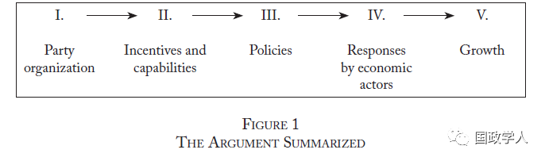
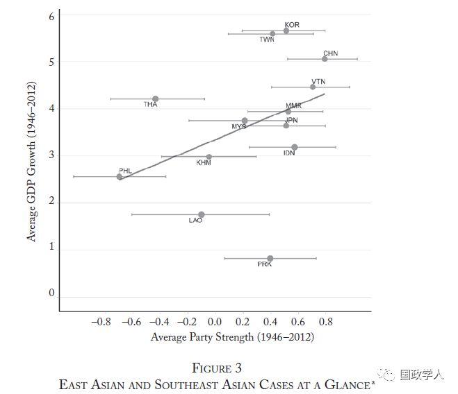
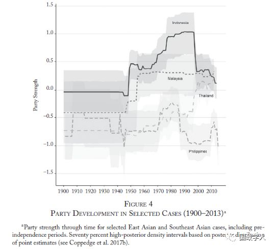
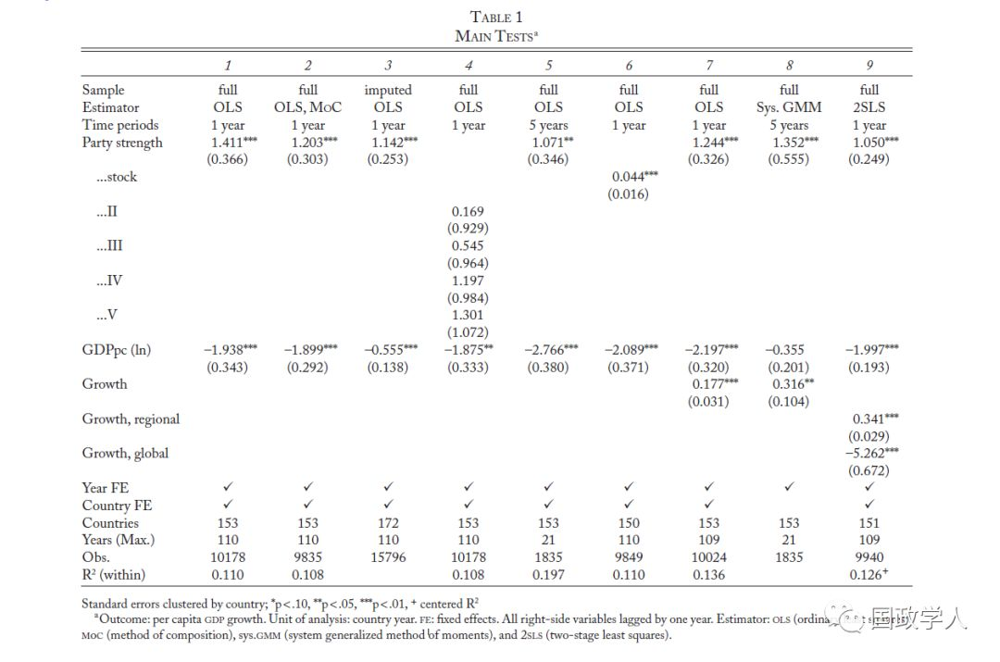
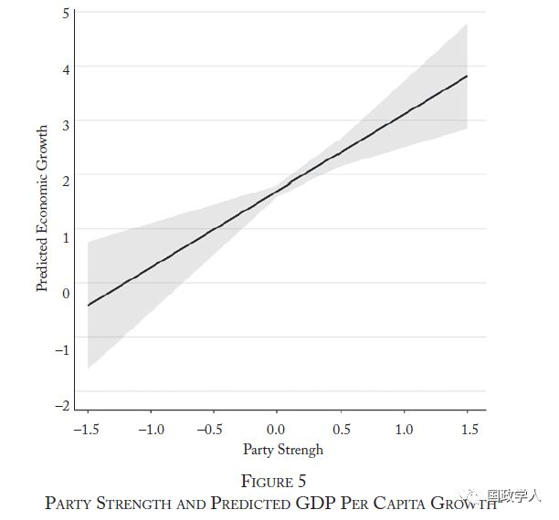

收录于合集

简 介
【作者】 本文作者共有八位，在此介绍前两位作者。第一作者为Fernando Bizzarro，哈佛大学政治学系博士候选人，他的研究兴趣为拉美和巴西政治、政治制度的形成原因和影响，并特别关注政党。第二作者为John Gerring，德克萨斯州立大学奥斯汀分校政治学系教授，主要研究兴趣为比较政治和政治学研究方法，他也是本文使用的民主多样性数据库的共同主持人（co-PI of the Varieties of Democracy project）
** 【编译】** 兰星辰
** ** ** 【审校】****** 李雯珲 杨丛语
** **【 来源 】****Bizzarro, F., Gerring, J., Knutsen, C., Hicken, A., Bernhard, M., Skaaning, S., . . . Lindberg, S. (2018). Party Strength and Economic Growth. World Politics, 70(2), 275-320.
【 ** ** 期刊 】****《世界政治》（World Politics）是一份涵盖政治学和国际关系的综合性学术期刊，成立于1948年，由剑桥大学出版社出版。该期刊的2017年影响因子为3.25，在国际关系类别的85种期刊中排名第6，在政治科学类别的169种中排名第11。

**** 政党实力和经济增长
Party Strength and Economic Growth
内容提要
多数学者同意 政治制度对经济增长很重要，并且已经针对政体类型、产权、法制、官僚制和发展国家、以及总体国家能力对经济增长的影响进行了广泛和深入的研究。本文则关注政党的作用，提出了政党实力影响经济增长的机制，并结合东亚和东南亚进行了案例分析，同时利用民主多样性数据库（ Varieties of Democracy project ）从 1 901 年到 2 01 3 年的相关 面板 数据 进行了一系列回归分析和稳健性检验。结论认为无论是在民主还是威权政体，强有力的政党对经济增长都有重要的积极作用。
**
**
文章导读
现有的大量关于现代政党诞生的政治学研究强调了在民主国家政党在巩固民主和强化政治责任中发挥的作用。近期，一些研究也说明强有力的政党能通过抵制庇护主义（clientelism）和提供公共产品来促进经济增长。同时，研究也发现在威权国家，制度化的政党能够稳固威权统治秩序，实施一党制的威权国家与其他威权国家相比经济发展得更好。结合既有研究成果， 作者认为民主和威权国家的政党可能都会影响经济增长，尽管不同的政体类型下这一影响机制可能有所差别；政党组织方式会影响它们管理经济的能力，强有力的政党对经济增长有更为积极影响。 当然，作者指出 经济增长是一个制度和非制度要素综合作用的复杂结果，因此并不否定其他要素在经济增长的作用。 另外，作者 认为强有力的政党并不总是能够促进经济增长，也有一些例外情况。但是，当其他条件不变时，统计意义上，强有力的政党经常引领经济增长。
**
**
**1
** 理 论
这一部分作者提出了一个政党实力影响经济增长的机制（路径），这一路径有五个节点，具体参考下图：

第一个节点是 政党的组织性 ( Party organization) 。作者给出了一个对政党实力的描述性定义。强有力的政党被定义为统一的（united）、集中的（centralized）、稳定的（stable）、有复杂组织形式的（organizationally complex）、有长期稳定的支持者（tied to long-standing constituencies）的政治组织。具体而言，强有力的政党有如下两个特点。第一是拥有全国性的组织，政党的影响力根据地位分配而不是由个人分配，人事任命和决策程序有明确规则并且高度程式化和规范化。这些特点确保政党保持团结统一来回应支持者诉求。第二是组织结构的复杂性，强有力的政党有遍布全国的地方组织，这些地方组织帮助政党获得与地方事务和公民诉求相关的信息。特别是在威权国家，地方组织向政党报告民众潜在的不满和反抗，进行社会控制。
第二个节点是 动机和能力 （ Incentives and capabilities ） ，政党在组织上的特点将会以三种方式影响领导人的动机和能力。第一种方式是 责任 （ accountability）。强有力的政党的领导人的自身野心会受到政党的限制，迫使其完成政党的目标。在强有力的政党内部选举领导人的过程中，候选人需要承诺完成政党的目标，且政党有内部机制，可以对违背政党目标的领导人进行限制和惩罚。如在民主国家，当政党领导人做出违背政党和党员利益的决策时，政党内一般党员可以通过拒绝执行决策来维护政党和个人利益。在威权国家，党员间稳定持久的个人关系会使党员克服集体行动困境，从而抗衡最高领导层的威胁政党利益的行为。另外，强有力的政党可通过限制领导人的任期和选拔过程来对领导人进行一定的限制。第二种方式是 时间范围（ time ****horizons ），由于强有力的政党拥有严密的组织结构和程式化的任命、决策执行过程，它存续的时间往往比较长。另外，有证据证明政党的形象和大众的支持取决于政党的政策和长期的执政表现。这就意味着政党领导者如果想在这样一个长期稳定的政党下获得群众支持和个人利益的话，就必须要考虑以短期成本为代价，为长期的经济增长目标服务。同时，长的时间范围也使得强有力的政党间有可能通过协商妥协为长远目标服务。第三个是 调和 （ coordination）。在强有力的政党组织下，尽管政客们有时并不同意某一领域的政策，但是只要他们的利益在其他领域得到政党的维护，就有可能使得有着不同利益和支持者的政客们在该政策上达成妥协。此外，由于强有力的全国性政党组织代表了各地区和社会群体的利益，它可以整合全国范围内的支持者，以制定长时期的政策并确保其执行。
第三个 节点是政策 （ Policies），强有力的政党的动机和能力会影响政策的选择和执行。第一，作者认为强有力的政党的长期执政时间范围和对政治领袖施加约束，会限制侵犯产权、高额税率、恶性通货膨胀等掠夺性（predatory）政策的出现，使政党政策倾向于保护产权。第二，强有力的政党经常能够提供包括基础设施、教育、医疗卫生在内的公共物品。第三，在一些具有争议的公共政策上，强有力的政党往往能更有能力做出权威性的决策。第四，强有力的政党往往能更有效率地执行政策。
第四个节点是 经济 行为 体的回应 （ R esponse by economic actors ） ，面对不同的动机和背景，经济和社会行为体的反应会影响短期和长期的经济增长。第一是对掠夺性政策的限制和对经济增长政策的承诺往往会建立一个稳定的经济环境，可以降低不确定性，增加收入预期，促进投资、创新，降低交易成本。第二是教育和医疗等政策提升了人力资本。第三是强有力的政党领导下，内战很少发生，内政保持稳定，从而促进了投资，提高社会生产力。
第五个节点是 增长 （ Growth）。在强有力的政党领导下，一方面，通过增加对物质和人力资本的投资、保持货币和财政政策稳定、以及避免内乱和其他不稳定因素影响等措施，有利于实现短期经济增长；另一方面通过教育实现劳动力再生产、加大科技创新投入等措施实现长期经济增长。
**2
** 案例研究
接下来作者进行了实证检验。首先，作者使用了民主多样性对国家每年调查的面板数据集，结合了上述对政党实力的描述性定义，提出了 量化政党实力 的六个指标。分别为：1.持久的全国性组织(permanent national party organizations)2.持久的地方组织(permanent local party branches)3.人员选举的中心化机制(centralized mechanisms of candidate selection)4.立法凝聚力(legislative cohesion)5.最小限度的政党转换(minimal party switching)6.社会基础程式化的(programmatic)而不是庇护主义式的连接。衡量这些指标的具体的问题、聚合效度的检验、以及后续回归分析和稳定性检验的细节等都可以参考附录。在地区案例部分，作者首先绘制了东亚和东南亚13个国家和地区1946-2012年平均政党实力和GDP增长率的散点图和回归线，发现二者具有比较强的正相关关系。作者又绘制出了从1900年到2013年印尼、老挝、泰国、菲律宾这四个国家的政党实力变化图，结合这四个国家的经济发展情况，作者发现政党实力变化和经济发展趋势基本吻合，特别如泰国在1997年宪法改革后他信领导的泰爱泰党实力加强帮助泰国走出金融危机实现经济增长，而一直被认为裙带关系和庇护主义猖獗、腐败严重、经济政策不能很好贯彻落实、一直没能实现快速经济增长的菲律宾的政党实力分数也处于这四个国家的最低水平，参考下图。


**3
** 统计检验
随后作者进行了回归分析和稳健性检验，主要的检验可以参考下图

作者利用了从1901年到2010年110年间153个国家的面板数据集进行回归分析，固定效应为年份和国家，被解释变量为GDP增长率，主要解释变量为政党实力和人均GDP对数值（主要为了解释收敛效果和富裕国家政党实力相对比较高），模型1为最小二乘（OLS）回归基本模型，解释变量政党实力统计显著（p<0.001），政党实力每提高1个单位人均GDP增长率数值提高1.41。政党实力和GDP增长率预测可以参考下图（95%置信区间）：

稳健性检验中，模型2通过矢量合成法规避编码误差、模型3使用Amelia II 多元回归缺失值估算算法填充了缺失值，从而避免出现样本选择偏差问题，模型4将政党实力通过定序方法将政党实力虚拟变量化，再次检验了基本模型。模型5以每五年为期测量了政党实力与中长期经济增长的相关度。模型6生成存量变数（stock variable）进行检验。模型7则引入增长的一阶滞后变量，模型8使用广义矩估计（GMM），模型9使用了工具变量完成了两阶段最小二乘回归2SLS从而规避内生性问题。如上图所示，基础模型通过了后续八个模型的稳定性检验。随后的六个回归中分别控制了影响经济增长的城市化、人均寿命、产权等21个变量，六个模型中政党实力均统计显著。之后的分地区（南部非洲、亚洲太平洋、前苏联、中东北非）、分政体类型（民主和威权）、分时间（1901-1945,1946-2010）的11个回归中政党实力对经济增长的影响依然统计显著。最后作者以增长危机（GDP增速小于0）、持续增长（五年间GDP增速均大于0）、增长稳定性（十年间GDP增速的方差）为被解释变量通过OLS和PCSE（Panel Corrected Standard Errors，面板校正标准误）方法回归，也都证明了政党实力和经济增长稳定性的强相关关系。
**4
** ** ** 结 论 ****
本研究统合了对民主政体政党和威权政体政党的研究， 认为无论是在民主还是威权政体，强有力的政党对经济增长都有重要的积极作用。 本文指出 未来研究可以进一步精细化连接政党能力和经济增长的因果路径，同时进一步研究政党实力对国内政治其他方面的影响等。 此外，我们也可以把因果问题向后推，即为什么强有力的政党在某些国家出现，在其他国家却没有，是存在影响政党实力的总体因果要素（generalizable causal factors），还是关键节点的产物（a product of critical junctures）？这些都是需要进一步探究的问题。
_ ** _ 本文由国政学人微信平台独家编译首发**
更多阅读
【重磅速递】约瑟夫·奈：美国霸权的兴衰：从威尔逊到特朗普 | 国政学人
【重磅推荐】巴里·布赞：英国学派视角下的中国崛起 | 国政学人
【重磅速递】米尔斯海默：注定失败：自由主义国际秩序的兴衰 | 国政学人
【百年国关】历史在国际社会中的应用：从巴黎和会到现在 | 国政学人
【国际组织】IO杂志：联合国维和行动的武力运用问题研究 | 国政学人
【国际秩序】为什么自由主义国际秩序理念将美国外交政策引入歧途？| 国政学人
【关系理论】“关系”：世界政治关系理论的中国话语 | 国政学人
【英国学派】张勇进：中国与全球国际社会中的自由主义等级制：实力与对规范变迁的协商 | 国政学人
【地区秩序】论经济实力的可转化性：中国经济崛起与东亚安全秩序 | 国政学人
【中俄关系】不得已的伙伴：系统-单元动态与中俄关系 | 国政学人
【IPE研究】美国对外贸易政策的“1934年体制”是如何形成的？ | 国政学人
【现实主义】斯蒂芬·沃尔特：傲慢的终结与美国克制的新时代 | 国政学人
【理论批判】系统、层次与结构理论：沃尔兹的理论并非系统理论 | 国政学人
【外交政策】单极体系下的不和平状态与美国外交政策 | 国政学人
【欧洲研究】资本主义多样性与合规：加入欧盟后中东欧的经济改革 | 国政学人
【理论研究】吴建树：权力、道德、均势、联盟与摩根索——汉斯·摩根索的经典现实主义思想再解读